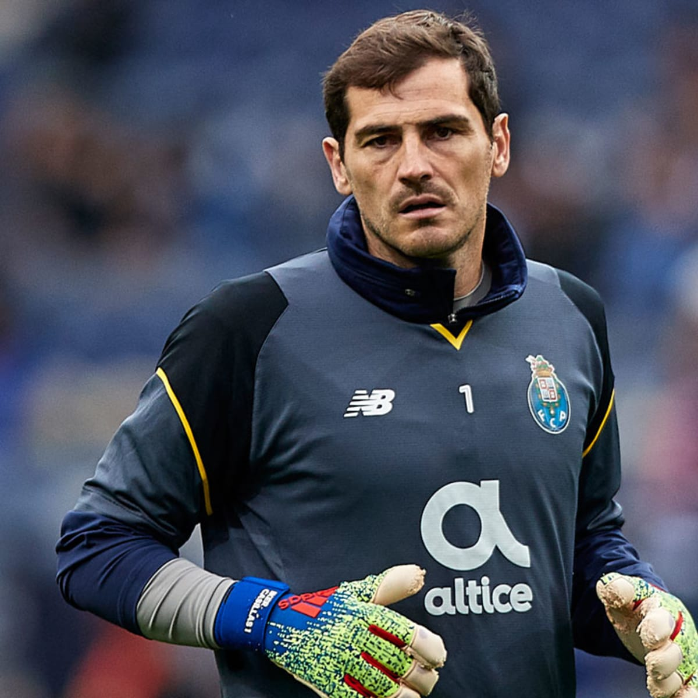

Iker Casillas Fernández (Spanish pronunciation: [ˈikeɾ kaˈsiʎas feɾˈnandeθ]; born 20 May 1981) is a Spanish retired
professional footballer who played as a goalkeeper. Popularly dubbed "San Iker" ("Saint Iker") for his ability to
produce spectacular saves, Casillas is widely regarded to be one of the greatest goalkeepers of all time.[nb 1] He is
known for his athleticism, quick reactions and outstanding shot-stopping ability. Having spent the majority of his
career at Real Madrid, Casillas is one of the few players to achieve over 1000 professional career matches, and holds
the record for the most clean sheets in the UEFA Champions League, as well as for the Spain national team.

At club level, Casillas started his career with the Real Madrid youth team, eventually gaining promotion to the main
team in 1999, where he became the youngest goalkeeper to play in the final of the Champions League, and to win the
title, at 19 years and four days. Casillas became the first choice goalkeeper at Real Madrid, winning two Champions
Leagues and La Liga titles in his first three seasons, establishing himself as one of the best goalkeepers in the world.
During his highly successful career in Madrid, Casillas won all major club titles, including five La Liga titles, four
Supercopa de España titles, two Copa del Rey titles, three UEFA Champions Leagues, two UEFA Super Cups, one
Intercontinental Cup and the FIFA Club World Cup. After 25 years with Real Madrid, Casillas joined FC Porto in 2015 on a
free transfer, where he won the Primeira Liga and a Supertaça Cândido de Oliveira title. While at Porto, he broke the
record for most consecutive seasons played in the UEFA Champions League (20) and amassed the most appearances in the
competition (177). He ended his playing career in February 2020, after almost a year on the sidelines following a heart
attack he suffered during a training session with Porto in May 2019.
With 167 international caps, Casillas has the second most appearances for the Spain national team, making him the joint
tenth-most capped footballer of all time. An unused substitute at UEFA Euro 2000, Casillas became the nation's first
choice goalkeeper at the 2002 World Cup, and went on to play at UEFA Euro 2004 and the 2006 World Cup. In 2008, he was
made captain, and went on to lead the team to the European Championship title that year. Casillas also led Spain to
their first World Cup win in 2010, where he kept a joint–record five clean sheets, winning the Yashin Award for the best
goalkeeper of the tournament. Spain became the first nation to retain the European Championship, winning the title again
in 2012, where he set the record for most consecutive minutes without conceding a goal in the competition (509). In
2014, Casillas became one of four players to represent Spain at four World Cups.
{kind=link}
{kind=link}